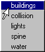

buildQuickSelectMenu
When mapped to a hotkey, builds a popup menu containing all current Quick Select Sets, as depicted at right.
The ‘Press’ assignment should be:
buildQuickSelectMenu;
The ‘Release’ assignment should be:
if( `popupMenu -exists tempMM` ) { deleteUI tempMM; }
The Popup Menu is activated with the Left Mouse Button.